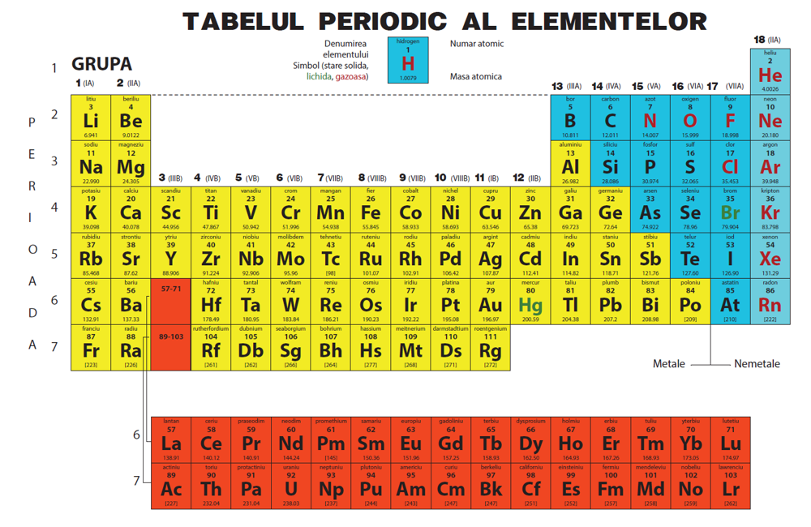

Sărurile sunt compuși formați din metal și radical acid.
Sărurile se împart în două categorii principale:
Pentru a scrie formula unei săruri, folosim valența metalului și valența radicalului acid.
Spune dacă următoarele sunt săruri (S) sau nu (N):
